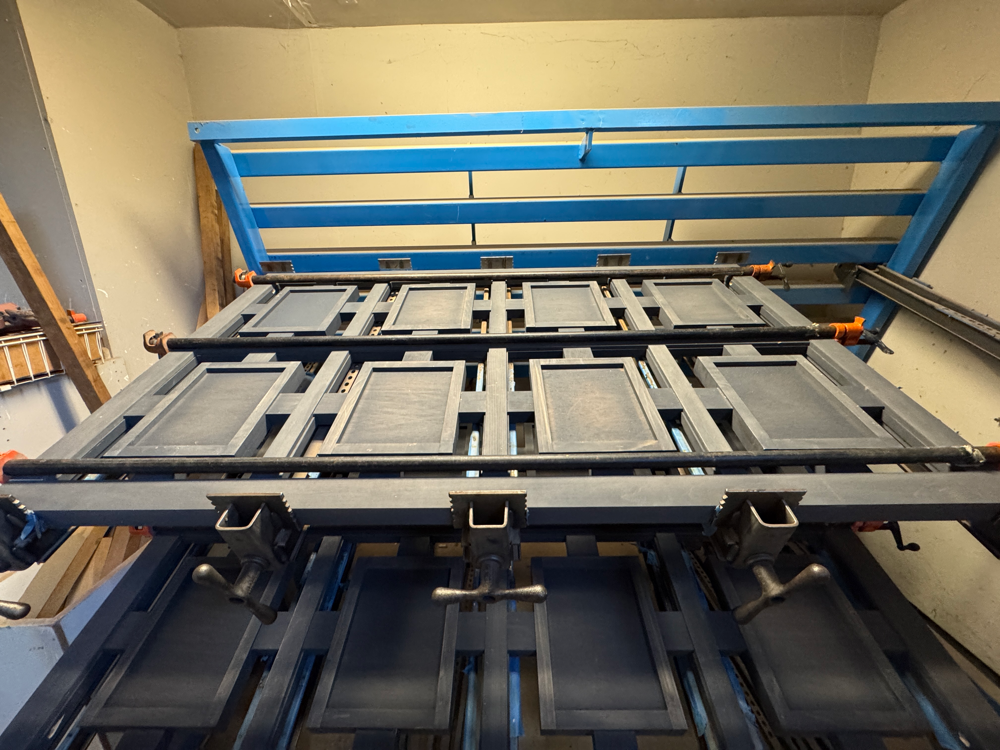
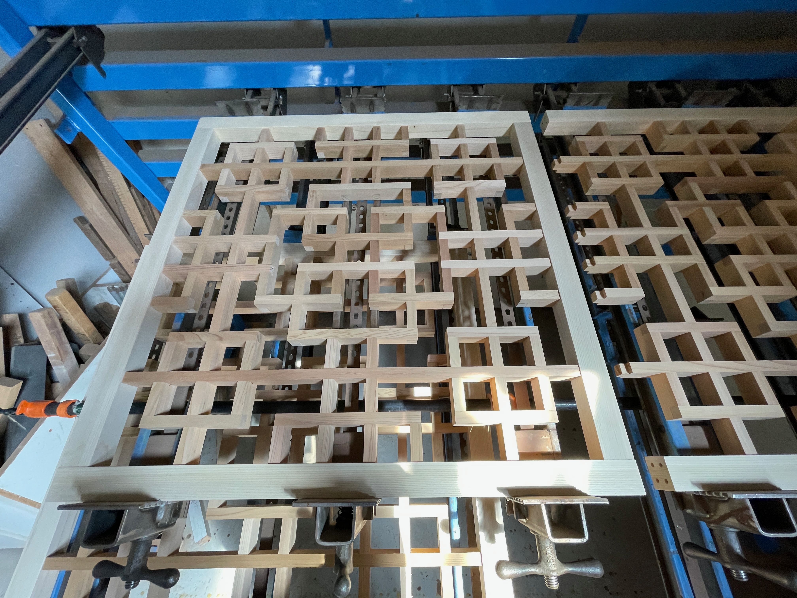
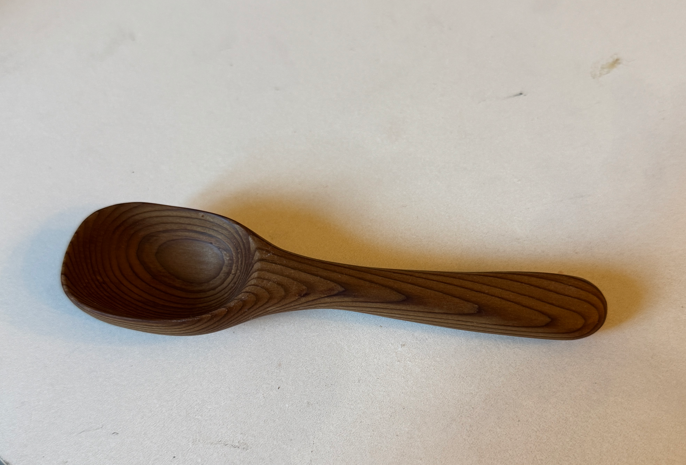

Woodworking & Lattice Design
Combining traditional craftsmanship with modern geometric patterns.
The Craft
Working at a lattice-making company, I learned the importance of precision and material choice. Whether it's a small decorative piece or a large outdoor structure, the geometry of the wood must be perfect to ensure both beauty and structural integrity.

Simple Stained Lattice
Learning more skills to expand the possibilities of creation.

More Complex Joinery
Mastering the skills to be able to create more complex pieces where every millimeter matters.

Spoon Carving
Carved by hand using a hook knife and sloyd knife, focusing on ergonomic handle design and bowl symmetry. Made from cedar and finished with food-grade mineral oil.